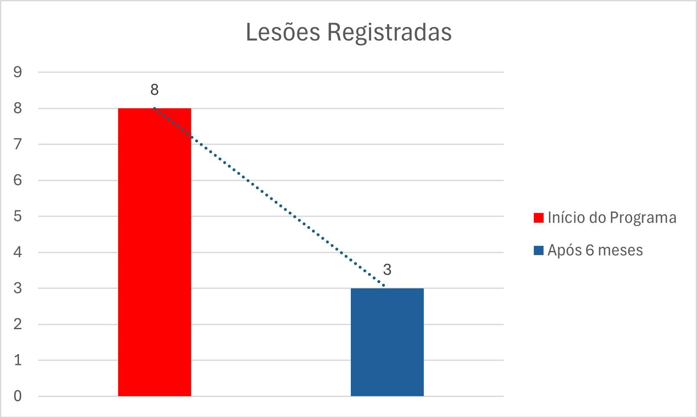
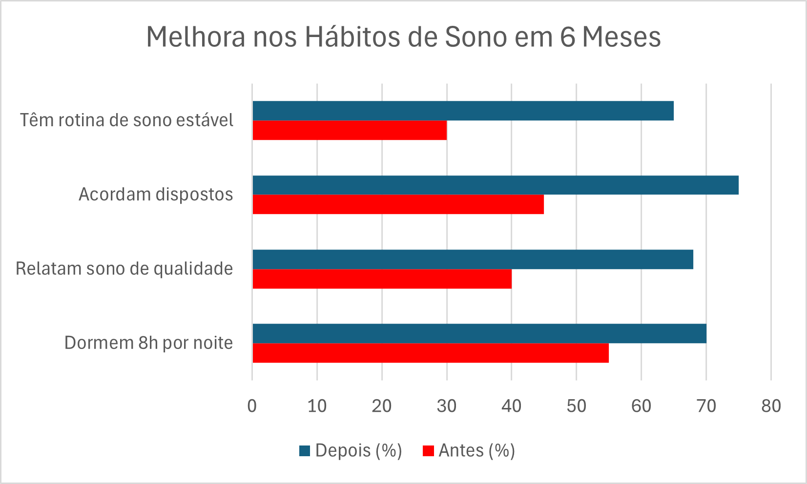
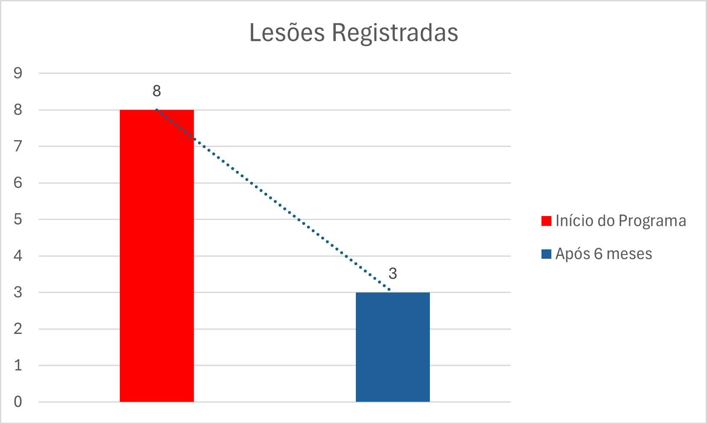
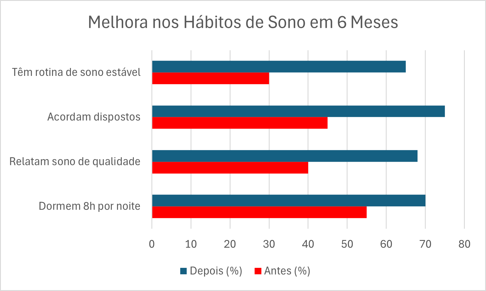

ODS Seguidos pela Mastergol

ODS 3 - Saúde e Bem-estar
A MasterGol promove o bem-estar físico e emocional dos jovens atletas por meio de treinos personalizados, acompanhamento psicológico e ações preventivas. Os treinos são planejados com foco em resistência, força e equilíbrio corporal, respeitando o ritmo de cada participante. Além disso, o projeto oferece suporte emocional com profissionais especializados, que realizam atendimentos individuais e atividades em grupo sobre autoestima, ansiedade e saúde mental. Avaliações periódicas monitoram indicadores como sono, alimentação e incidência de lesões, permitindo ajustes nos planos de treino e garantindo uma evolução saudável e segura.
 




ODS 4 - Educação de Qualidade
A educação é um dos pilares da MasterGol. O projeto oferece reforço escolar, oficinas de leitura e raciocínio lógico, além de orientação vocacional para os atletas. A equipe pedagógica acompanha o desempenho acadêmico de cada jovem, mantendo contato com escolas e famílias para garantir frequência e progresso nos estudos. Workshops sobre cidadania, ética e habilidades socioemocionais complementam a formação dos atletas. Os dados mostram aumento na permanência escolar, nas notas e no engajamento educacional, comprovando que o esporte pode ser um aliado poderoso da educação.

ODS 5 - Igualdade de Gênero
A MasterGol tem como missão democratizar o acesso ao esporte e à educação, especialmente para jovens em situação de vulnerabilidade social. O projeto realiza captação ativa em comunidades periféricas, oferece bolsas integrais e garante transporte, alimentação e material esportivo para os atletas de baixa renda. Além disso, promove atividades de integração entre jovens de diferentes regiões e perfis socioeconômicos, fortalecendo o respeito à diversidade. Os gráficos mostram que, desde 2017, houve aumento significativo na participação de alunos de regiões menos favorecidas, com impacto direto na autoestima, no desempenho escolar e na inserção em competições oficiais.

ODS 10 - Redução das Desigualdades
A MasterGol tem como missão democratizar o acesso ao esporte e à educação, especialmente para jovens em situação de vulnerabilidade social. O projeto realiza ações de captação ativa em comunidades periféricas, incluindo as escolas públicas, oferece bolsas integrais e garante transporte, alimentação e material esportivo para os atletas de baixa renda. Além disso, promove atividades de integração entre jovens de diferentes regiões e classes sociais, fortalecendo o respeito à diversidade e a empatia. Os gráficos comparativos mostram que, desde 2017, houve aumento significativo na participação de alunos de regiões menos favorecidas, com impacto direto na autoestima, no desempenho escolar e na inserção em competições oficiais. A MasterGol é um agente de transformação social que reduz desigualdades na prática.

ODS 12 - Consumo e Produção Responsáveis
A sede da MasterGol passou por uma transformação sustentável desde 2017, adotando práticas que reduzem o consumo de recursos naturais e promovem a produção consciente. Foram eliminados copos descartáveis, reduzido o uso de papel em mais de 75%, e implantados sistemas de coleta seletiva e reciclagem. Em 2025, a sede passou a operar com 100% de energia elétrica proveniente de fonte solar, tornando-se referência em energia limpa no setor esportivo. Os dados mostram queda expressiva no consumo de energia tradicional, na geração de resíduos não reciclados e na emissão de carbono. A MasterGol acredita que a sustentabilidade começa no cotidiano, e que o esporte pode ser um exemplo de responsabilidade ambiental.
.png)